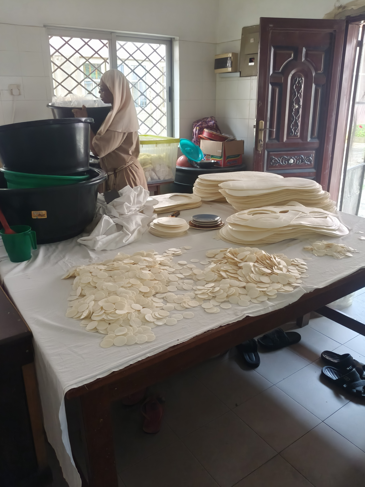
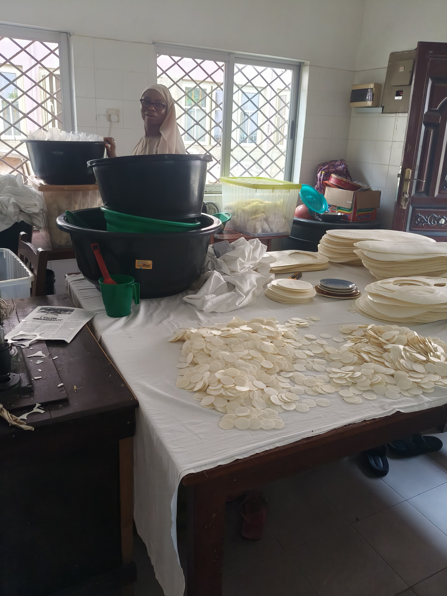


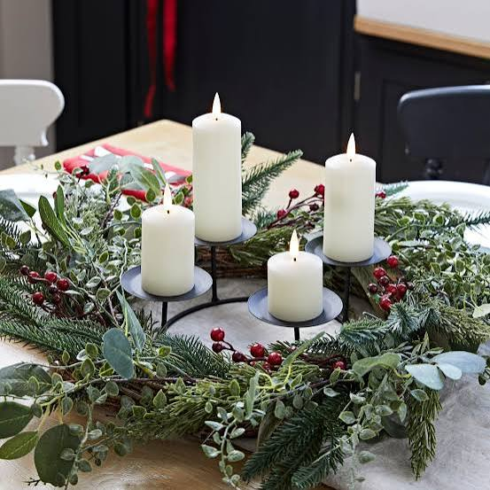
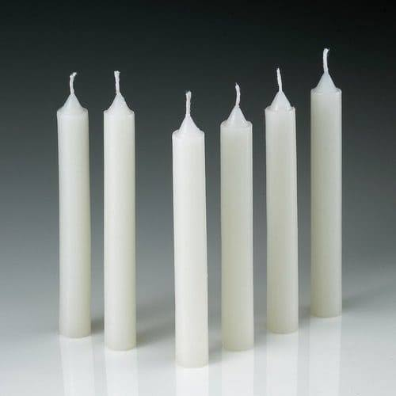
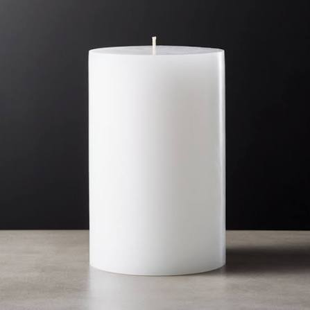
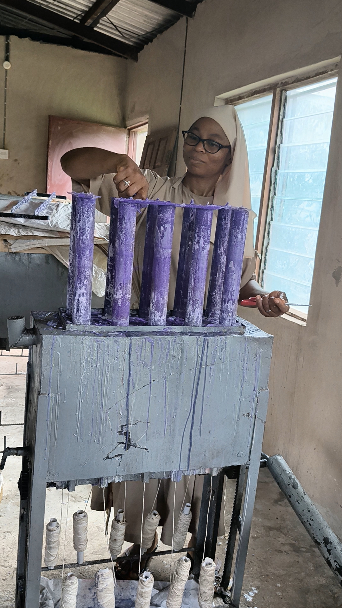
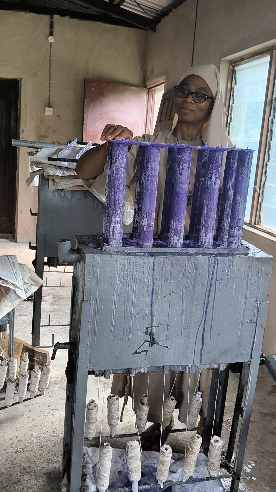
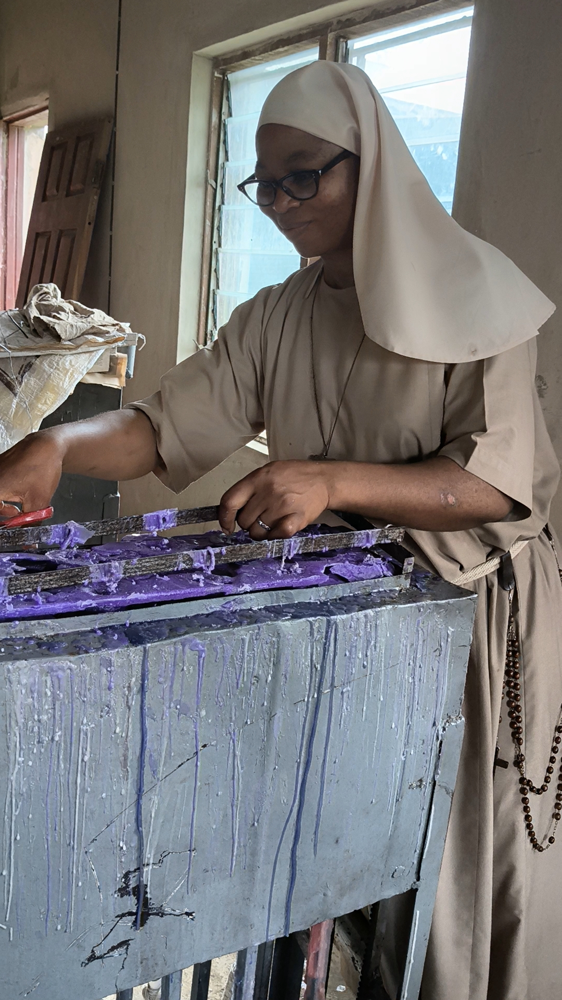
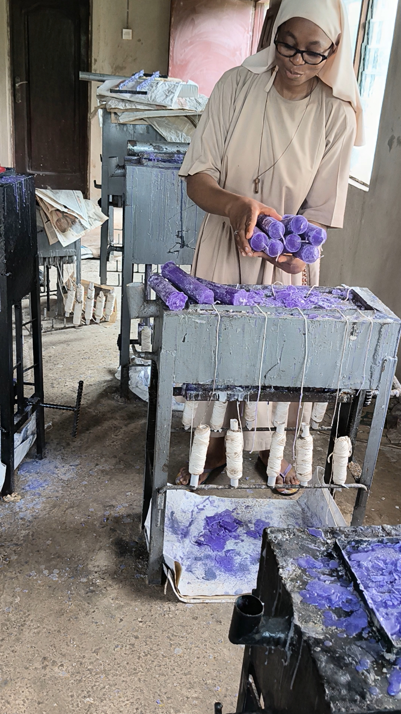
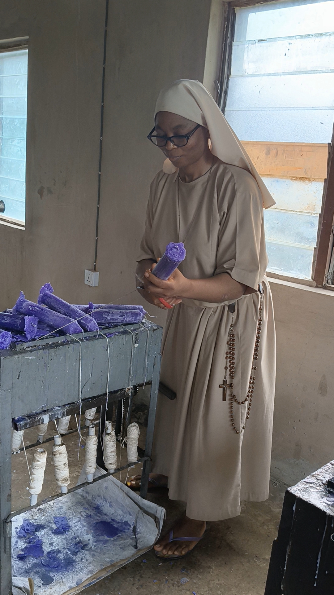
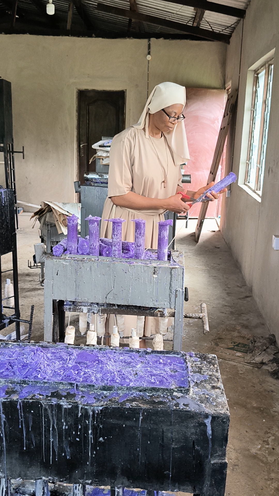
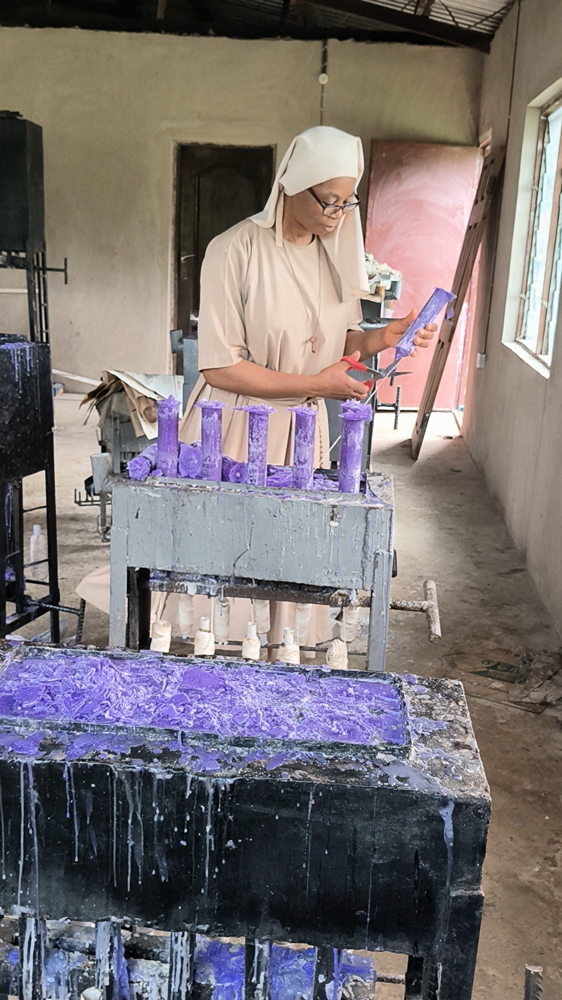
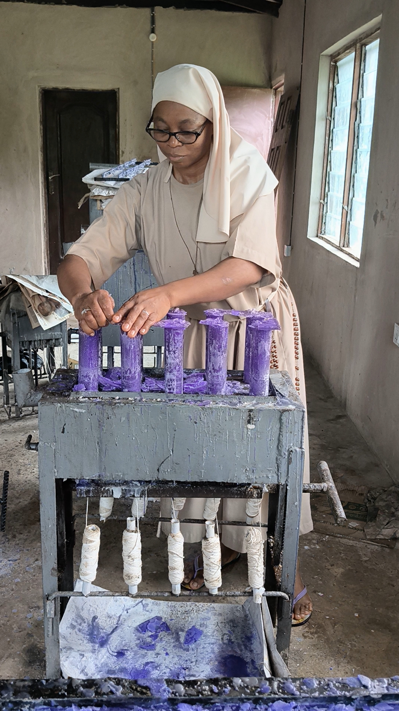
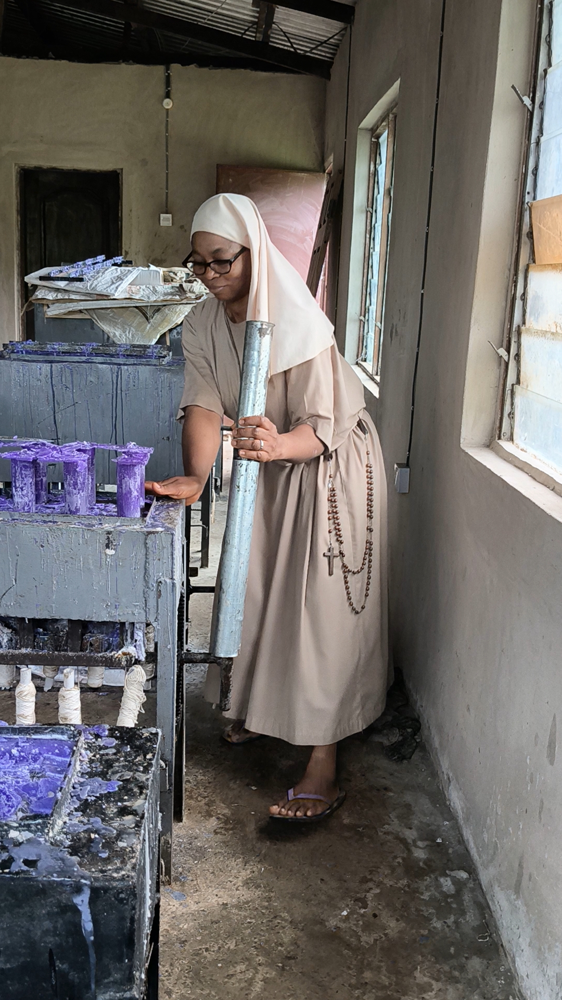
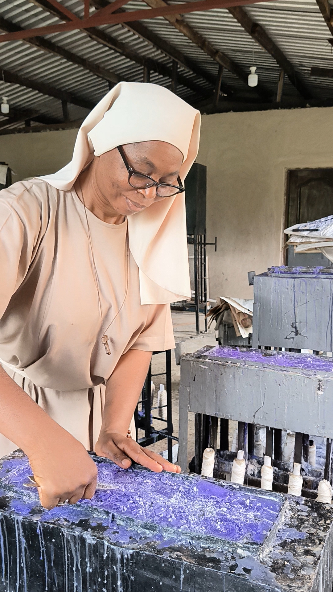
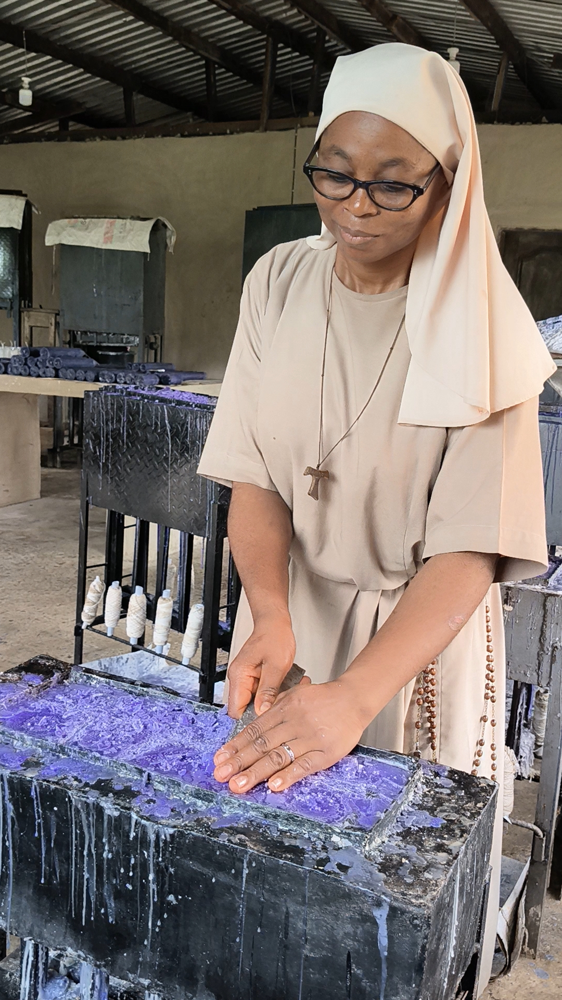
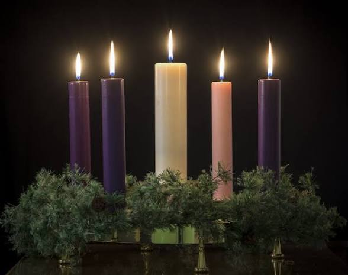


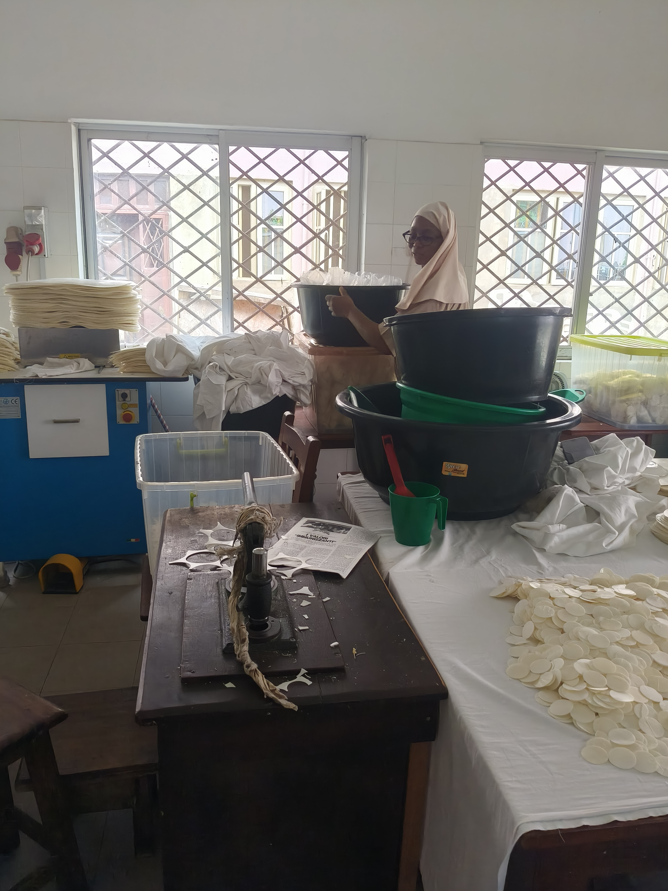
Every candle, every host, every quiet hour of work — captured in a single place. Browse the crafts and the daily labor of the Sisters of St. Clare Monastery Nigeria.
Advent is the season in which the Church prepares her heart for the coming of Christ — His first coming in Bethlehem, and His final coming in glory. It is a season of waiting, but not passive waiting. It is the waiting of a bride for her bridegroom, of a people for their king, of a soul for its God.
The Purple of Advent — In the Church's tradition, Advent is dressed in purple — the colour of penance, kingship, and expectation. It is the same purple worn during Lent, and it tells us that this is a season of preparation, not celebration; of longing, not fulfilment. But it is also the purple of royalty — for the King is coming, and His people are preparing His way.
At the centre of every parish's Advent is the Advent Wreath and its candles — three purple, one rose, and the white Christ Candle at the centre. Each Sunday of Advent, another candle is lit, and the Church draws closer to the mystery of the Incarnation.
St. Clare Monastery Nigeria crafts each Advent candle with the same care the Sisters give to the sanctuary candles — pure wax, clean wicks, steady flame, and a life that burns for the glory of God.
Today we are in the 26th Week of Ordinary Time, Year A. Time waits for no man. Every week is a step closer to Advent. Buy now and keep.
At the heart of the Easter Vigil, a single flame is struck from the new fire and carried into the church on the Paschal Candle — the Lumen Christi, the Light of Christ. It is the oldest and most sacred candle in the Church's liturgy, a living sign of the Resurrection.
The Sign of the Paschal Candle — The candle is marked with a cross, the Alpha and the Omega, and the year — a sign that Christ is the beginning and the end. Five grains of incense are fixed into the cross in memory of His wounds. On Easter night, the Exsultet is sung, and the whole Church is drawn into the mystery of the Resurrection by the light of this one candle.
St. Clare Monastery Nigeria crafts the Paschal Candle with the reverence it deserves — pure, clean-burning wax; careful preparation of the wick; and a finish worthy of the sanctuary.

















